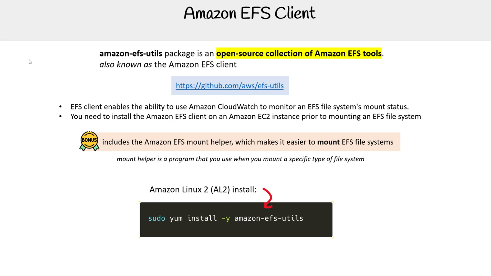
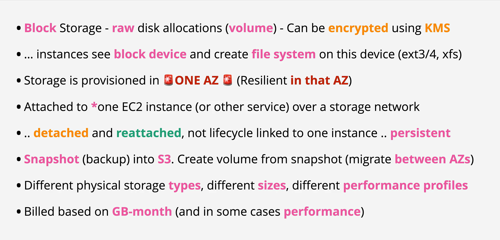
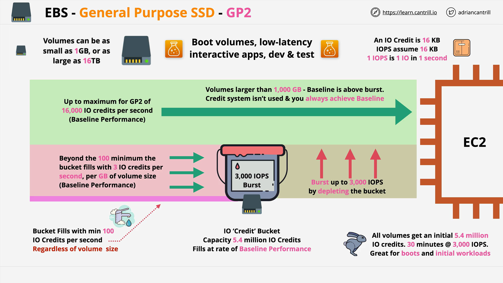
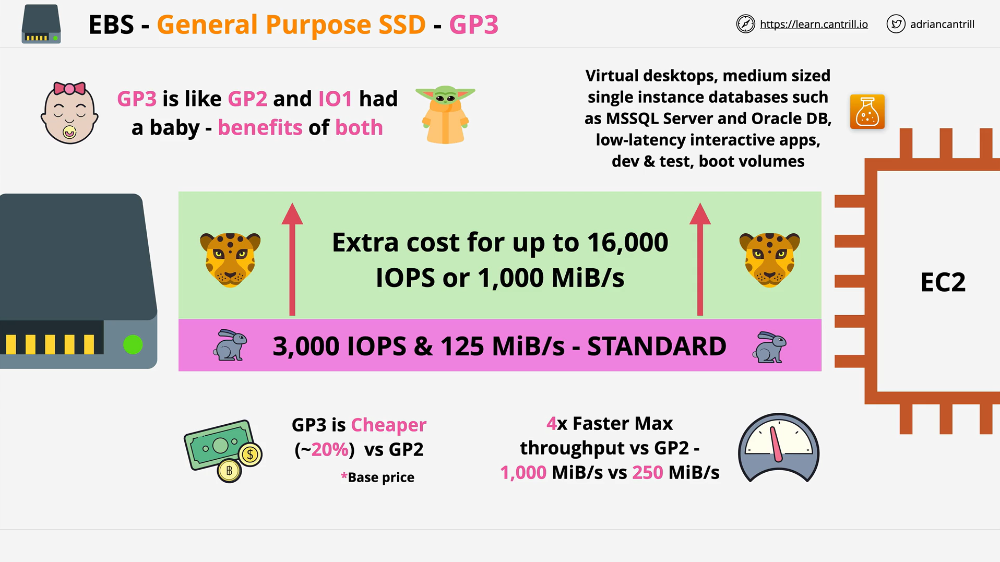

EBS Volume
- An EBS (Elastic Block Store) Volume is a network drive you can attach to your instances while they run.
- It allows your instances to persist data, even after their termination.
- They can only be mounted to one instance at a time.
- They are bound to a specific availability zone.
- Analogy: Think of them as a “network USB stick”.
EBS Volume Details
- It’s a network drive (i.e., not a physical drive).
- It uses the network to communicate with the instance, which means there might be a bit of latency.
- It can be detached from an EC2 instance and attached to another one quickly.
- It’s locked to an Availability Zone (AZ).
- An EBS Volume in
us-east-1acannot be attached tous-east-1b. - To move a volume across, you first need to snapshot it.
- Have a provisioned capacity (size in GBs, and IOPS).
- You get billed for all the provisioned capacity.
- You can increase the capacity of the drive over time.
EBS – Delete on Termination Attribute
 - Controls the EBS behavior when an EC2 instance terminates:
- By default, the root EBS volume is deleted (attribute enabled).
- By default, any other attached EBS volume is not deleted (attribute disabled).
- This can be controlled by the AWS console or AWS CLI.
- Use case: Preserve the root volume when an instance is terminated.
- Controls the EBS behavior when an EC2 instance terminates:
- By default, the root EBS volume is deleted (attribute enabled).
- By default, any other attached EBS volume is not deleted (attribute disabled).
- This can be controlled by the AWS console or AWS CLI.
- Use case: Preserve the root volume when an instance is terminated.
EBS Snapshots
 - Make a backup (snapshot) of your EBS volume at a point in time. - It’s not necessary to detach the volume to do a snapshot, but it’s recommended. - Snapshots can be copied across AZs or Regions.
EBS Snapshots Features

- EBS Snapshot Archive:
- Move a Snapshot to an “archive tier” that is 75% cheaper.
- Restores take 24 to 72 hours.
- Recycle Bin for EBS Snapshots:
- Setup rules to retain deleted snapshots so you can recover them after accidental deletion.
- Specify retention (from 1 day to 1 year).
- Fast Snapshot Restore (FSR):
- Force full initialization of the snapshot to have no latency on the first use (extra cost).

EBS Volume Types
EBS Volumes come in 6 types:
| Volume Type | Description |
|---|---|
| gp2 / gp3 (SSD) | General-purpose SSD volume balancing price and performance |
| io1 / io2 Block Express (SSD) | Highest-performance SSD volume for mission-critical, low-latency or high-throughput workloads |
| st1 (HDD) | Low-cost HDD volume for frequently accessed, throughput-intensive workloads |
| sc1 (HDD) | Lowest-cost HDD volume for less frequently accessed workloads |
- EBS volumes are characterized by Size | Throughput | IOPS (I/O operations per second).
- When in doubt, always consult the AWS documentation.
- Only gp2/gp3 and io1/io2 Block Express can be used as boot volumes.
EBS Volume Types - Use Cases
General Purpose SSD (gp2 / gp3)


- Cost-effective storage with low-latency.
- Use cases:
- System boot volumes, virtual desktops, development, and test environments.
- gp3:
- Baseline of 3,000 IOPS and throughput of 125 MiB/s.
- Can increase IOPS up to 16,000 and throughput up to 1000 MiB/s independently.
- gp2:
- Small volumes can burst IOPS to 3,000.
- IOPS is tied to the size of the volume (max IOPS is 16,000).
Provisioned IOPS (PIOPS) SSD (io1 / io2 Block Express)

- Critical business applications with sustained IOPS performance.
- Great for database workloads (sensitive to storage performance and consistency).
- io1 (4 GiB - 16 TiB):
- Max IOPS: 64,000 for Nitro EC2 instances & 32,000 for other instances.
- Can increase IOPS independently from storage size.
- io2 Block Express (4 GiB - 64 TiB):
- Sub-millisecond latency.
- Max IOPS: 256,000 with an IOPS:GiB ratio of 1,000:1.
- Supports EBS Multi-Attach.
Hard Disk Drives (HDD) – st1 / sc1

- Cannot be a boot volume.
- st1:
- For Big Data, Data Warehouses, Log Processing.
- Max throughput 500 MiB/s, max IOPS 500.
- sc1:
- For data that is infrequently accessed.
- Suitable for scenarios where the lowest cost is important.
- Max throughput 250 MiB/s, max IOPS 250.
EBS Volume Types - Summary
 For more information on EBS volume types, consult AWS Documentation.
For more information on EBS volume types, consult AWS Documentation.
EBS Multi-Attach – io1/io2 family
 - Attach the same EBS volume to multiple EC2 instances in the same AZ.
- Each instance has full read and write permissions to the high-performance volume.
- Use case:
- Achieve higher application availability in clustered Linux applications (e.g., Teradata).
- Applications must manage concurrent write operations.
- Up to 16 EC2 instances at a time.
- Must use a file system that’s cluster-aware (not XFS, EXT4, etc.).
- Attach the same EBS volume to multiple EC2 instances in the same AZ.
- Each instance has full read and write permissions to the high-performance volume.
- Use case:
- Achieve higher application availability in clustered Linux applications (e.g., Teradata).
- Applications must manage concurrent write operations.
- Up to 16 EC2 instances at a time.
- Must use a file system that’s cluster-aware (not XFS, EXT4, etc.).
EBS Encryption
- When you create an encrypted EBS volume, the following happens:
- Data at rest is encrypted inside the volume.
- All data in flight moving between the instance and the volume is encrypted.
- All snapshots are encrypted.
- All volumes created from the snapshot are encrypted.
- Encryption is handled transparently (no manual work needed).
- Minimal impact on latency.
- EBS Encryption uses keys from KMS (AES-256).
- Copying an unencrypted snapshot allows encryption.
- Snapshots of encrypted volumes are encrypted.
Encryption: Encrypt an Unencrypted EBS Volume
- Create an EBS snapshot of the volume.
- Encrypt the EBS snapshot (using copy).
- Create a new EBS volume from the snapshot (the volume will be encrypted).
- Attach the encrypted volume to the original instance.